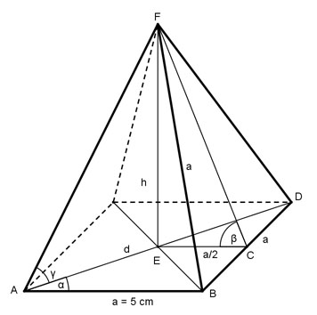

Aufgabe 62 Wie groß sind h, β und γ?

Im Dreieck ABD (gleichschenklig, rechter Winkel bei B): a sin α = --- |*d d d * sin α = a |:sin α a 5 cm d = ------- = --------- = 7,1 cm sin α 0,7071 Im Dreieck AEF (rechter Winkel bei E): Satz von Pythagoras: d d a² = (---)² + h² |-(---)² 2 2 d 7,1 h² = a² - (---)² = 5² cm² - (----- )² cm² = 2 2 = 12,4 cm² h = √12,4 cm² = 3,5 cm Im Dreieck ECF (rechter Winkel bei e): h 3,5 cm cos α 0,2588 tan β = ----- = --------- = 1,4 --> β = 54,5° a/2 5/2 cm hs * sin α = h | :sin α h 15 cm hs = -------- = --------- = 16,2 cm sin α 0,9285 Im Dreieck AEF (rechter Winkel bei E): h 3,5 cm tan γ = ------ = ---------- = 0,9859 d/2 7,1/2 cm --> γ = 44,6°